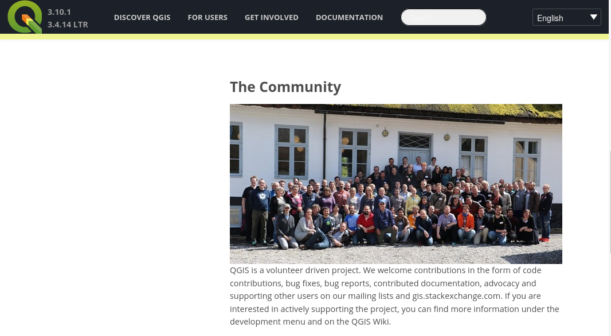
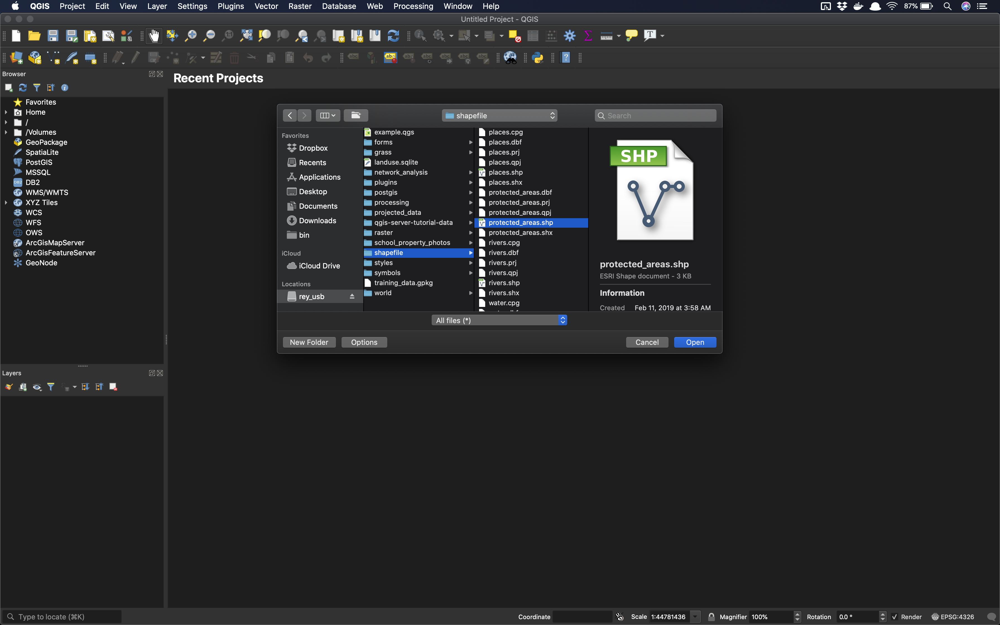
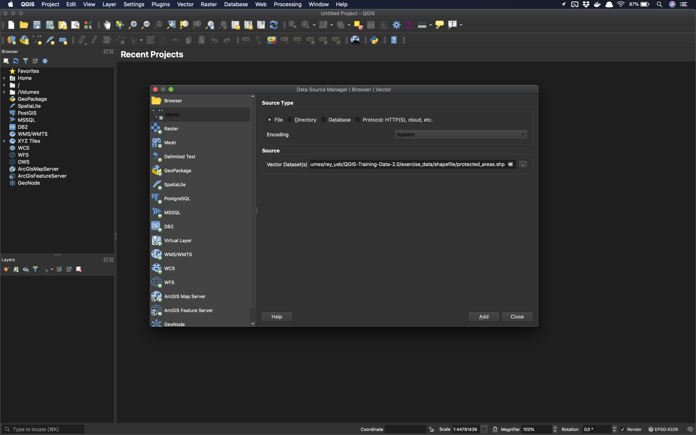
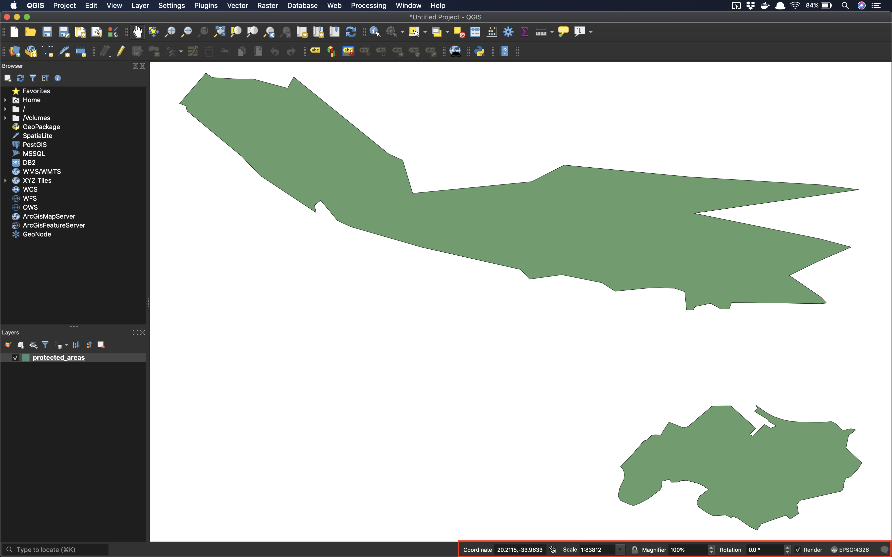
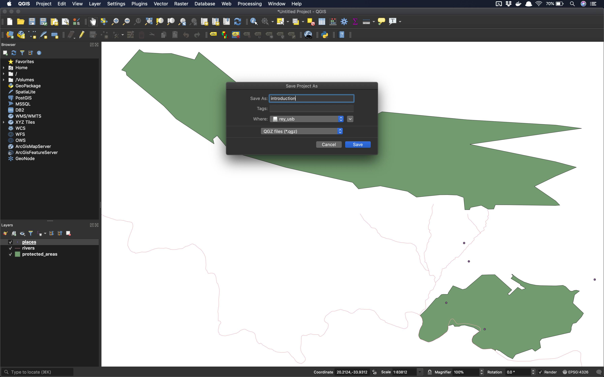
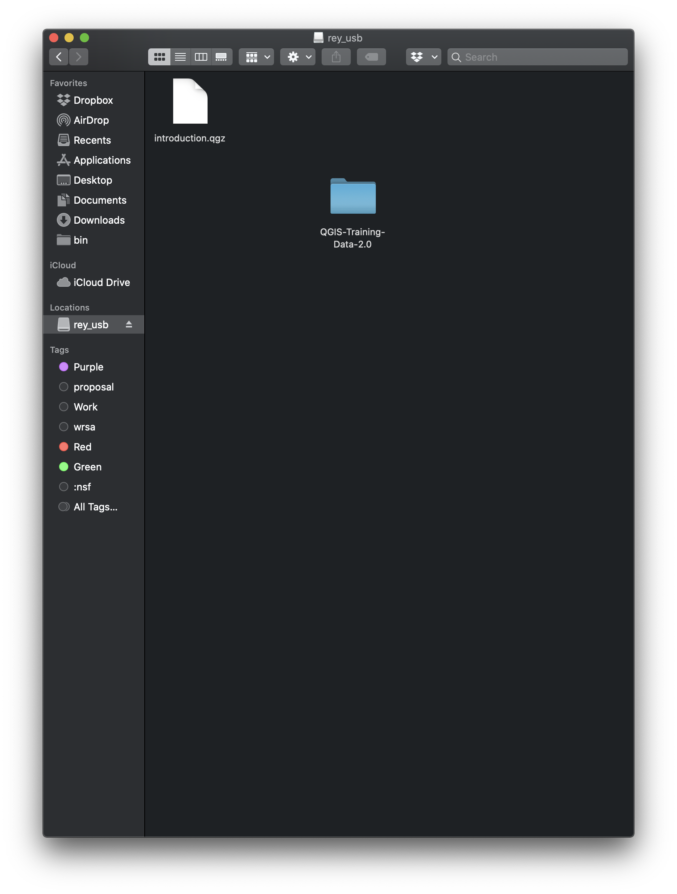
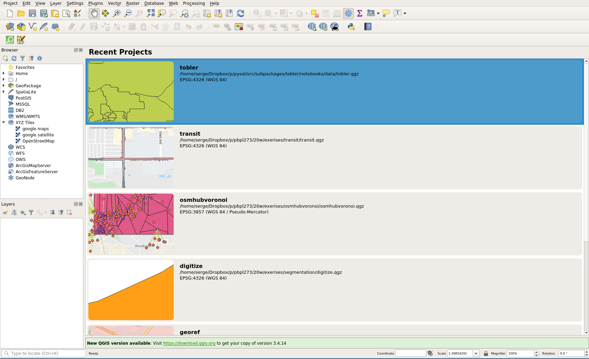
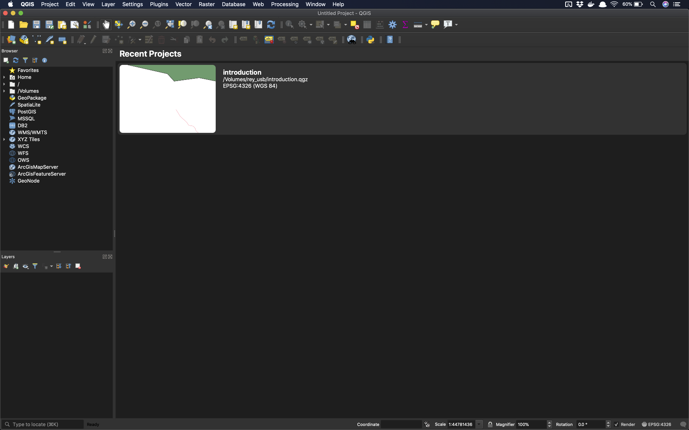

Introduction to GIS
Sergio Rey
Created: 2020-01-01 Wed 14:18
Outline
- GIS Software
- Open Source and Open Science
- QGIS
- Interface
- Working With Files and Directories
GIS Software
Open Source, Open Science, Open Education
Open Source
Freedoms
- Free as in Beer
- Free as in Speech
Open Science
Open Education
My beliefs:
- access to quality education is everyone's birthright
- human knowledge is a public good that should be available to all
- human knowledge is a public good that we all can contribute to
Getting Started with Lab Computers
Windows
https://edu.gcfglobal.org/en/windowsbasics/working-with-files/1/
Mac OS X
https://edu.gcfglobal.org/en/windowsbasics/working-with-files/1/
USB Drives
Why
- saving your work
- allowing you to sit at a different lab computer
- allowing you to work outside of the lab
What
- a 2 gb drive should be sufficient
How
- plug in
- see it in the file explorer
- copy files to it
QGIS


Installation
Windows
Mac OS X
Linux
Sample Data
Download Sample Data
Insert USB Drive

Copy Example Data Folder to USB Drive

Interface
Interface Getting Started
Open QGIS

Load A Vector Layer

Set usb path

Usb path

Loaded Vector

Interface Components
Menu Bar

Toolbar
Canvas

Browser Panel

Layer Panel

Locator Bar

Status Bar

Working with Projects, Files, and Directories
Loading additional layers
Rivers

Rivers

Places
Projects
What is a QGIS Project?
- A meta-file that defines the files associated with a project
- Has extension
qgz - Records location of files
Current: Untitled

Saving a Project

Saving a Project

Project: introduction

Project file

Quit QGIS
Open Project on Different Computer (Linux)

QGIS Launch (Linux)

Open Project

Opened Project

QGIS Launch (Mac)

Opened Project (Mac)
Exercise
- download datasets
- load first data set
- answer basic questions about attributes
- answer basic questions about layer
- load a second layer
- change layer order
- screen grabs to complete exercise
- save project
- close qgis
- reopen qgis and reload project from where you left off
Next Up
Vector Data